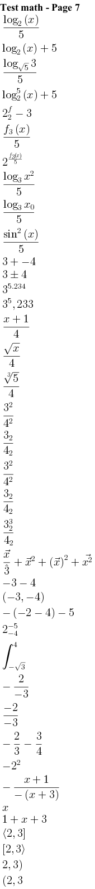

@startcreole math-Page-7
= Test math - Page 7
<math>log_2(x)/5</math>
<math>log_2(x)+5</math>
<math>log_sqrt(5)3/5</math>
<math>log_2^5(x)+5</math>
<math>2^f_2-3</math>
<math>f_3(x)/5</math>
<math>2^(f_3(x)/5)</math>
<math>log_3x^2/5</math>
<math>log_3x_0/5</math>
<math>sin^2(x)/5</math>
<math>3+ -4</math>
<math>3+-4</math>
<math>3^5.234</math>
<math>3^5,233</math>
<math>(x+1)/4</math>
<math>sqrtx/4</math>
<math>root(3)(5)/4</math>
<math>3^2/4^2</math>
<math>3_2/4_2</math>
<math>3^2/4^2</math>
<math>3_2/4_2</math>
<math>3_2^3/4_2</math>
<math>vecx/hat3+vecx^2+(vec x)^2 + vec(x^2)</math>
<math>-3-4</math>
<math>(-3,-4)</math>
<math>-(-2-4)-5</math>
<math>2_-4^-5</math>
<math>int_-sqrt(3)^4</math>
<math>-2/-3</math>
<math>(-2)/-3</math>
<math>-2/3-3/4</math>
<math>-2^2</math>
<math>-(x+1)/-(x+3)</math>
<math>{:{:x:}:}</math>
<math>{:1+{:x:}+3:}</math>
<math>(:2,3]</math>
<math>[2,3rangle</math>
<math>2,3)</math>
<math>(2,3</math>
@endcreole